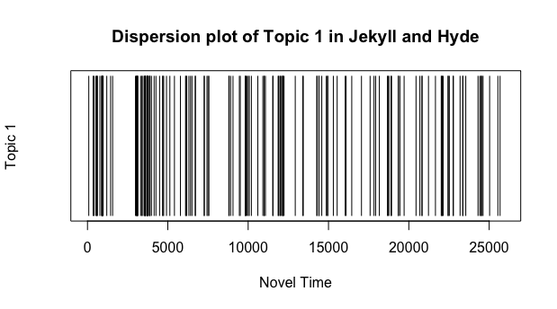
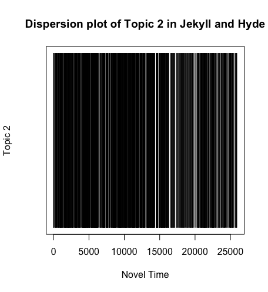

For these dispersion plots, I used the NLTK stopwords list and split the text into chunks of 500 words.
Topic 0

List of Words in Topic 0
- letter
- doctor
- client
- friend's
- mark
- bottle
- handed
- escape
- judge
- swear
Analysis
These words indicate that some sort of letter relating to the doctor was written to a friend or possible client.
For these dispersion plots, I used the NLTK stopwords list and split the text into chunks of 250 words.
For these dispersion plots, I used the Princeton stopwords list and split the text into chunks of 500 words.
For these dispersion plots, I used the Princeton stopwords list and split the text into chunks of 250 words.
Use this tab to compare between different dispersion plots.

